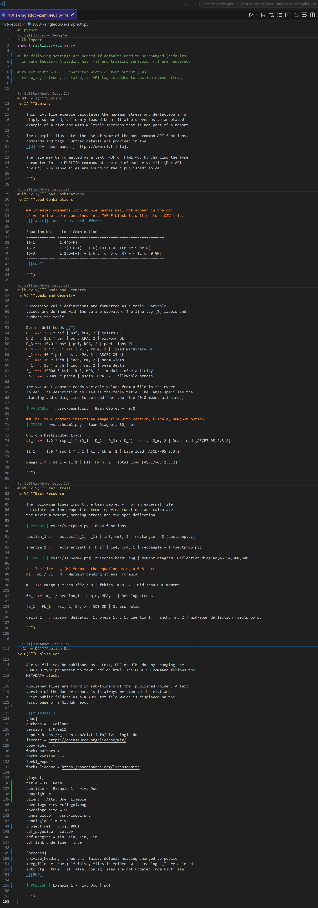

A.2 Example 1#
[1] Examples#
Three examples are provided.
- Example 1
This single doc example file illustrates common API functions and rivt markup. The %% marks indicate sections that can be interactively processed as cells (similar to a Jupyter Notebook). They can be created with a shortcut provided by rivt extensions . They also provide an interactive table of contents for navigating in VSCode.
The rivt file is followed by a screenshot of the same rivt file in VSCode with syntax highlights, and the rivt text doc output.
The entire project can be downloaded here or here.
The PDF output is here.
The HTML output is here.
- Example 2
A single doc example that illustrates use of Python functions,
- Example 3
An example rivt report. Reports are assembled through a customized report script - rivt-report.py stored in the rivt-report folder.
[2] rivt file - Ex. 1#
#! python
# %% import
import rivtlib.rvapi as rv
# The following settings are needed if defaults (in parenthesis) need to
# be changed. A leading hash (#) and trailing semicolon (;) are required.
# rv set_width = 80 ; character width of text output (80)
# rv no_tag = true ; if false, an API tag is added to section number (true)
# %% project description
rv.I("""Project description
Design of embedded pole foundation for the flagpole design example in
Appendix A of NAAMM/FP 1001-07, "Guide Specifications for Design of Metal
Flagpoles" Embedded pole foundation design is per 2024 IBC Eq 6-1 and Table
18-I-A. Soil properites are per Table 1806.2 in the 2024 IBC
""")
# %% design input
rv.V("""Design input
| IMAGE | rvsrc/image1.png | Calculation Diagram, 30, num
Design input _[T]
Mbase ==: 24.835 * ftkips |ftkips, mkN, 2 | moment at base of flagpole
P ==: 24.835 * kips |kips,kN,2| horizontal load
b ==: 24 * inch |inch, cm, 2 | width of concrete drilled pier
PFP ==: 200 * pcf | pcf, kN_m3, 2| allowable lateral bearing pressure - sandy gravel
h ==: 1 * ft | ft, m, 2| height
d ==: 10 * ft | ft, m, 2| initial guess for embedment depth
# This command loads Python functions from a file.
| PYTHON | rvsrc/pole_embed.py | Iterative functions
depth_1 :=: Depth_nonconstrained (d, P, h, b, PFP, 2) | ft, m, 2 | Required embed - nonconstrained
depth_2 :=: Depth_constrained (d, P, h, b, PFP) | ft, m, 2 | Required embed - constrained
""")
# %% publish doc
rv.D("""Publish doc
_[[METADATA]]
[doc]
authors = R Ward
version = 1.0.0a11
repo = -
license = https://opensource.org/license/mit/
copyright = -
fork1_authors = -
fork1_version = -
fork1_repo = -
fork1_license = https://opensource.org/license/mit/
[layout]
title = UDL Beam
subtitle = Example 2 - rivt Doc
copyright = --
client = User Example
coverlogo = logo2.png
coverlogo_size = 50
runninglogo = rwlogo.png
runninglabel = Robert Ward SE
project_ref = proj. 0001
pdf_pagesize = letter
pdf_margins = 1in, 1in, 1in, 1in
pdf_link_underline = true
[process]
private_heading = true ; if false, default heading changed to public
keep_files = true ; if false, files in folders with leading "_" are deleted
auto_cfg = true ; if false, config files are not updated from rivt file
_[[END]]
| PUBLISH | Flag Pole Foundation | text
""")
[3] Screenshot - VSCode rivt file#
rivt file in VSCode (click and zoom to enlarge)
{kind=link}

[4] rivt text doc#
This is the text form of the doc.
The PDF doc is here.
The HTML doc is here.
--------------------------------------------------------------------------------
Example 1 - rivt Doc | R Holland | v-1.0.0a11 | 2026-05-27 - 08:45AM
--------------------------------------------------------------------------------
1.1 Summary
--------------------------------------------------------------------------------
This rivt file example calculates the maximum stress and deflection in a
simply supported, uniformly loaded beam. It also serves as an annotated
example of a rivt doc with multiple sections that is not part of a report.
The example illustrates the use of some of the most common API functions,
commands and tags. Further details are provided in the
rivt user manual, https://www.rivt.info .
The file may be formatted as a text, PDF or HTML doc by changing the type
parameter in the PUBLISH command at the end of each rivt file (Doc-API
*rv.D*). Published files are found in the *_published* folder.
1.2 Load Combinations
--------------------------------------------------------------------------------
Table 1: ASCE 7-05 Load Effects (stored: t001-1.csv)
============= ================================================
Equation No. Load Combination
============= ================================================
16-1 1.4(D+F)
16-2 1.2(D+F+T) + 1.6(L+H) + 0.5(Lr or S or R)
16-3 1.2(D+F+T) + 1.6(Lr or S or R) + (f1L or 0.8W)
============= ================================================
1.3 Loads and Geometry
--------------------------------------------------------------------------------
Successive value definitions are formatted as a table. Variable
values are defined with the define operator. The line tag [T] labels and
numbers the table.
Table 2: Define Unit Loads
========== =============== ============= =====================
variable value [value] description
========== =============== ============= =====================
D_1 3.80 psf 0.18 kPA joists DL
D_2 2.10 psf 0.10 kPA plywood DL
D_3 10.00 psf 0.48 kPA partitions DL
D_4 3.00 klf 43.78 kN_m fixed machinery DL
L_1 40.00 psf 1.92 kPA ASCE7-O5 LL
b_1 10.00 inch 254.00 mm beam width
h_1 18.00 inch 457.20 mm beam depth
E_1 29000.00 ksi 199947.96 MPA modulus of elasticity
Fb_1 20000.00 lb_in2 137.90 MPA allowable stress
========== =============== ============= =====================
The VALTABLE command reads variable values from a file in the rvsrc
folder. The description is used as the table title. The range specifies the
starting and ending line to be read from the file (0:0 means all lines).
Table 3: Beam Geometry (rvsrc/beam1.csv)
========== ======== ========= =============
variable value [value] description
========== ======== ========= =============
spc_1 2.00 ft 0.61 m beam spacing
spn_1 16.00 ft 4.88 m beam span
========== ======== ========= =============
----------------------------------------
Fig. 1 - Beam Diagram
----------------------------------------
Uniform Distributed Loads
┌ Eq-1 | Dead load [ASCE7-05 2.3.2]
│
│ dl₁ = 1.2⋅(D₄ + spc₁⋅(D₁ + D₂ + D₃))
└
dl₁ = 3.64 klf [dl₁] = 53.09 kN_m | Dead load [ASCE7-05 2.3.2]
================== ============ ========= ============= ==========
D₄ spc₁ D₁ D₃ D₂
================== ============ ========= ============= ==========
3.00 klf 2.00 ft 3.80 psf 10.00 psf 2.10 psf
————— ————— ————— ————— —————
fixed machinery DL beam spacing joists DL partitions DL plywood DL
================== ============ ========= ============= ==========
┌ Eq-2 | Live load [ASCE7-05 2.3.2]
│
│ ll₁ = 1.6⋅L₁⋅spc₁
└
ll₁ = 0.13 klf [ll₁] = 1.87 kN_m | Live load [ASCE7-05 2.3.2]
=========== ============
L₁ spc₁
=========== ============
40.00 psf 2.00 ft
————— —————
ASCE7-O5 LL beam spacing
=========== ============
┌ Eq-3 | Total load [ASCE7-05 2.3.2]
│
│ ω₁ = dl₁ + ll₁
└
ω₁ = 3.77 klf [ω₁] = 54.96 kN_m | Total load [ASCE7-05 2.3.2]
========================== ==========================
ll₁ dl₁
========================== ==========================
128.00 ft·psf 3.64 klf
————— —————
Live load [ASCE7-05 2.3.2] Dead load [ASCE7-05 2.3.2]
========================== ==========================
1.4 Beam Response
--------------------------------------------------------------------------------
The following lines import the beam geometry from an external file,
calculate section properties from imported functions and calculate
the maximum moment, bending stress and mid-span deflection.
Table 4: Beam functions (rvsrc/sectprop.py)
========================== =====================================================
Function Docstring
========================== =====================================================
rectsect(b, d) section modulus of rectangle
rectinertia(b, d) moment of inertia of rectangle
midspan_delta(ln, w, e, i) mid-span deflection of simply supported beam with UDL
========================== =====================================================
┌ Eq-4 | rectangle - S (sectprop.py)
│
│ section₁ = rectsect(b₁, h₁)
└
section₁ = 540.00 in3 [section₁] = 8849.01 cm3 | rectangle - S (sectprop.py)
========== ==========
h₁ b₁
========== ==========
18.00 inch 10.00 inch
————— —————
beam depth beam width
========== ==========
┌ Eq-5 | rectangle - I (sectprop.py)
│
│ inertia₁ = rectinertia(b₁, h₁)
└
inertia₁ = 4860.0 in4 [inertia₁] = 202288.5 cm4 | rectangle - I (sectprop.py)
========== ==========
h₁ b₁
========== ==========
18.0 inch 10.0 inch
————— —————
beam depth beam width
========== ==========
----------------------------------------
Fig. 2 - Moment diagram | Fig. 3 - Deflection diagram
files: rvsrc/ss-beam2.png, rvsrc/ss-beam1.png
----------------------------------------
┌ Eq-6 | Maximum bending stress formula
│
│ M₁
│ σ₁ = ──
│ S₁
└
┌ Eq-7 | Mid-span UDL moment
│
│ 2
│ ω₁⋅spn₁
│ m₁ = ────────
│ 8
└
m₁ = 120.52 ftkip [m₁] = 163.40 mkN | Mid-span UDL moment
========= ===========================
spn₁ ω₁
========= ===========================
16.00 ft 3.77 klf
————— —————
beam span Total load [ASCE7-05 2.3.2]
========= ===========================
┌ Eq-8 | Bending stress
│
│ m₁
│ fb₁ = ────────
│ section₁
└
fb₁ = 2678.2 lb_in2 [fb₁] = 18.5 MPA | Bending stress
=========================== ===================
section₁ m₁
=========================== ===================
540.0 inch3 120.5 ft2·klf
————— —————
rectangle - S (sectprop.py) Mid-span UDL moment
=========================== ===================
┌ Eq-9 | Stress ratio
│
│ fb_1 < Fb_1
└
▮ ======== ========= =========== ======= ============
▮ fb₁ Fb₁ ratio L/R check reference
▮ ======== ========= =========== ======= ============
▮ 2.68 ksi 20.00 ksi 0.133908 OK Stress ratio
▮ ======== ========= =========== ======= ============
┌ Eq-10 | mid-span deflection (sectprop.py)
│
│ δ₁ = midspan_δ(spn₁, ω₁, E₁, inertia₁)
└
δ₁ = 0.04 inch [δ₁] = 1.00 mm | mid-span deflection (sectprop.py)
========= =========================== ===================== ===========================
spn₁ ω₁ E₁ inertia₁
========= =========================== ===================== ===========================
16.00 ft 3.77 klf 29000.00 ksi 4860.00 inch4
————— ————— ————— —————
beam span Total load [ASCE7-05 2.3.2] modulus of elasticity rectangle - I (sectprop.py)
========= =========================== ===================== ===========================